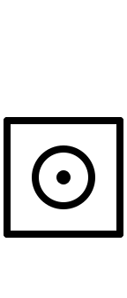
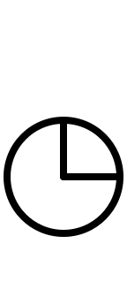

Crossing the River
A poem written only in Blisswords: each word is shown as its original Blissymbol drawing and as a new 3D equivalent extruded from that same drawing. Like Blissymbolics itself, the poem has no articles and no verb "to be", so it reads word by word. The line under each word gives the English name and the database entry it comes from.


night
symbol: night


friend
word: friend


walk
word: walk,go-(to)


go
word: go,depart,leave-(to)


window
symbol: window


star
symbol: star


see
word: see,look,watch-(to)


wind
symbol: wind


sleep
symbol: sleep


time
symbol: time


hope
word: hope
Words: 18 unique entries from blissdata_chars.js and blissdata_words.js.
Original drawings are 2d/*.svg; 3D equivalents are 3d/*.glb (glTF, one unit = one Bliss square)
with a rendered picture 3d/*.png. Interactive viewer: 3d/viewer.html.